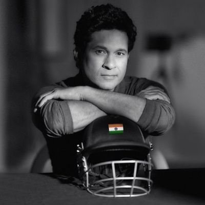
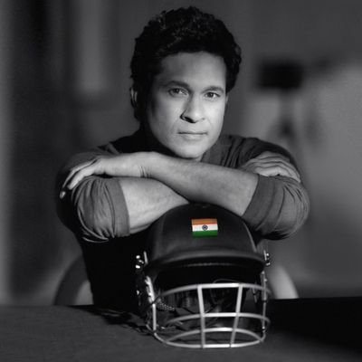
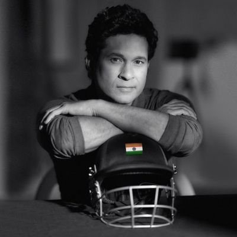
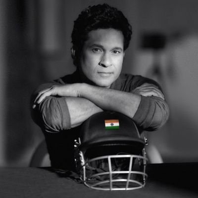

Sachin Tendulkar
 



| Personal Information | |
|---|---|
| Born | Apr 24, 1973 (49 years) |
| Birth Place | Bombay (now Mumbai), Maharashtra |
| Height | 5ft 5in |
| Role | Batsman |
| Batting Style | Right Handed Bat |
| Bowling Style | Right-arm Legbreak |
Sachin Ramesh Tendulkar AO BR is an Indian former international cricketer who captained the Indian national team. He is regarded as one of the greatest batsmen in the history of cricket.